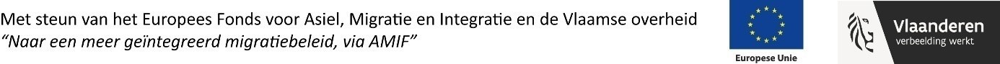

AMIF project Mozaïek

Het project
Samen-leven in diversiteit is een beleidstopic voor stad Mechelen als één van de vier meest multiculturele steden van Vlaanderen. Met dit project richten we ons op het verbeteren en versnellen van het integratieproces van inburgeraars. Inburgeraars kiezen uit 3 trajecten nl. een buddywerking, een toeleidingtraject in het vrijwilligerswerk of een kennismakingstraject in een buurtwerking of lokale dienstencentrum. Er wordt rekening gehouden met de vaardigheden, de kennis en de competenties van de inburgeraars in de ontwikkeling van dit aanbod.
Partners
De stad Mechelen (afdeling Sociaal Beleid, dienst Sociale Cohesie) voert het project uit in samenwerking met de gemeente Sint Katelijne Waver (afdeling samenleving en welzijn).
Duur
Het project loopt van 01/01/2021 tot en met 30/06/2022.
Budget
Het totale projectbudget bedraagt 158.675,48euro en wordt voor 20.000 euro gefinancierd door Europees Fonds voor Asiel, Migratie en Integratie (AMIF) en voor 20.000 euro door de VVSG Vereniging van Vlaamse Steden en Gemeenten (VVSG).